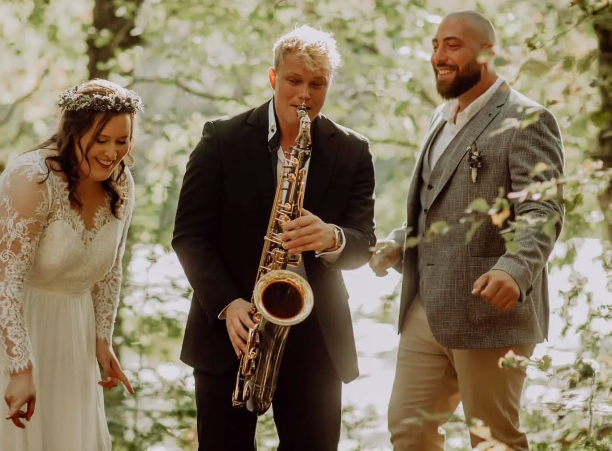
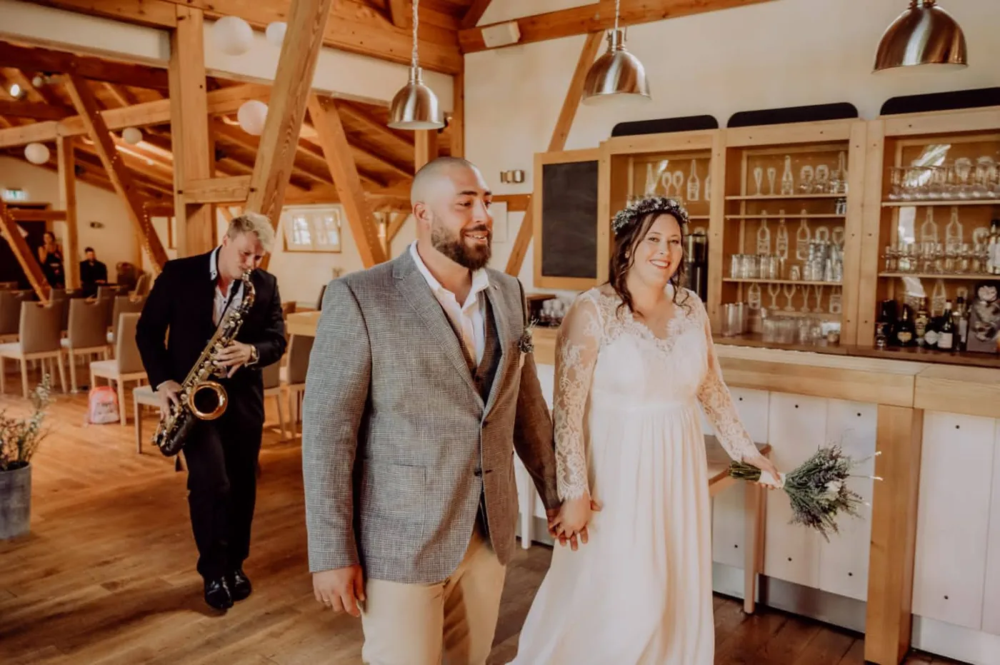

Jazz-Pop-Empfang
Elegant und einladend: eine unaufdringliche, edle und lebendige Atmosphäre mit Jazz-Standards und zeitlosen Pop-Klassikern.
Hochzeit
Vom ersten Ton der Trauung bis zum letzten Song auf der Tanzfläche: Live-Saxophon, das Ihren Tag unvergesslich macht – einfühlsam geplant, professionell gespielt.



Einzug, Ringtausch, Auszug – Ihre Wunschsongs, gefühlvoll interpretiert. Auch unter freiem Himmel, im Wald oder am See.
Elegante Jazz- und Pop-Klassiker oder moderner Deep-House-Sound im Ibiza-Style, während Sie mit Ihren Gästen anstoßen.
Dezente Live-Musik als Rahmen für Gespräche – solo oder als Jazz-Duo mit Gitarre oder Klavier.
DJ + Sax für eine volle Tanzfläche bis in die Nacht – die Live-Sets kommen genau dann, wenn die Stimmung sie trägt.
Elegant und einladend: eine unaufdringliche, edle und lebendige Atmosphäre mit Jazz-Standards und zeitlosen Pop-Klassikern.
Ein musikalisches Gesamterlebnis aus DJ-Performance und Live-Saxophon – kombiniert mit professioneller Eventtechnik und individueller Planung. Die Live-Sets werden passend auf den Abend verteilt und je nach Stimmung Ihrer Gäste gespielt; der DJ spielt davor, dazwischen und danach. Optional mit Djembe zubuchbar.
Die kleine, feine Besetzung: elegant, dezent und flexibel – ideal, wenn Live-Musik den Rahmen geben soll, ohne das Gespräch zu übertönen.
„Die Kommunikation verlief völlig reibungslos, die Einbettung ins Programm war super. Künstlerische Qualität: Schulnote 1+, absolut weiterempfehlenswert.“
„Super Musik, er war in unserer Familie voll integriert, sogar bei den Kindern beliebt. Toller Künstler, jederzeit zu empfehlen – auch als Mensch.“
„Felix hat dem ganzen Nachmittag das besondere Flair verliehen. Immer wieder gern – es war ein Highlight des Tages.“
Häufige Fragen
Anfrage
In zwei Minuten zur unverbindlichen Anfrage – Sie erhalten in der Regel innerhalb von 24 Stunden ein individuelles Angebot.
Beliebte Termine – Samstage und die Monate Mai bis September – sind oft mehr als ein Jahr im Voraus vergeben. Eine frühe Anfrage lohnt sich; kurzfristige Termine gerne auf Anfrage.
Oder direkt: info@saxofaxo.com · +49 173 926 5526